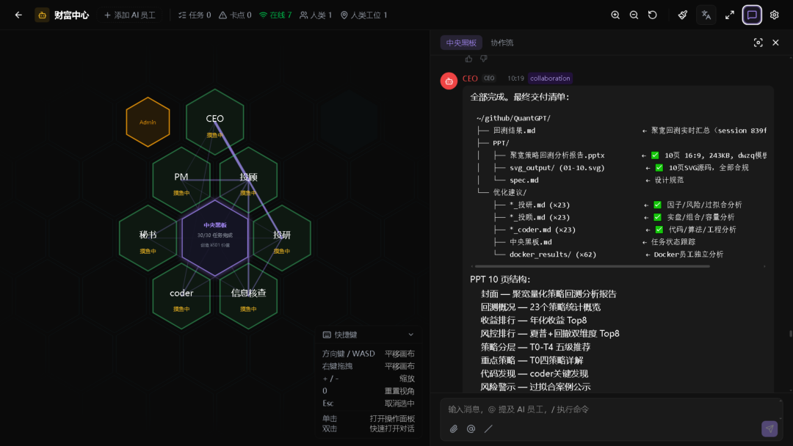
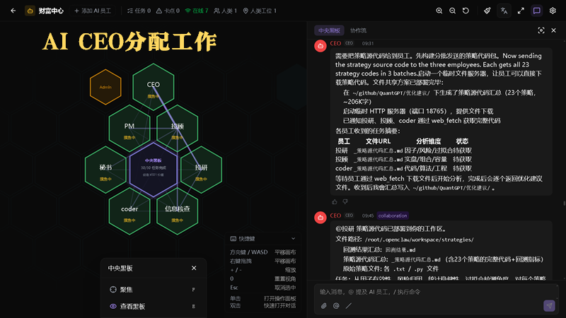
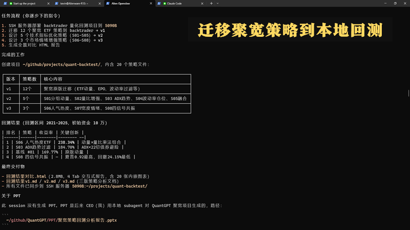
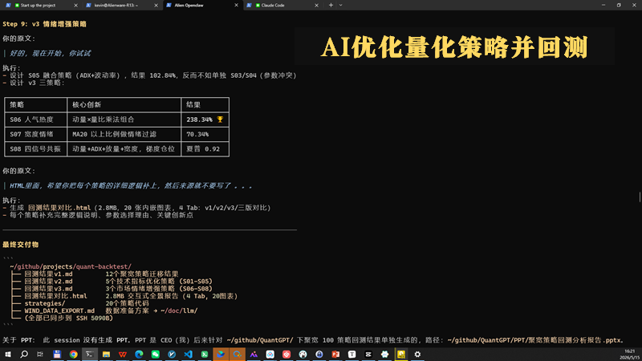
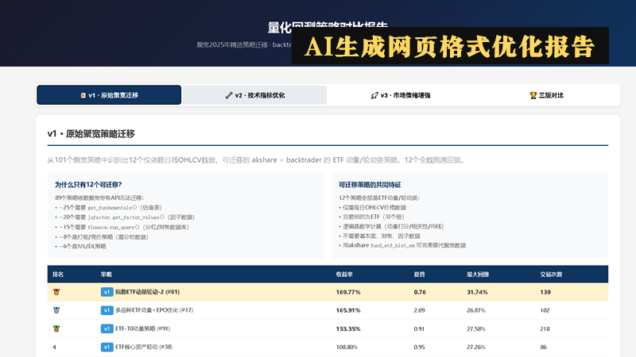
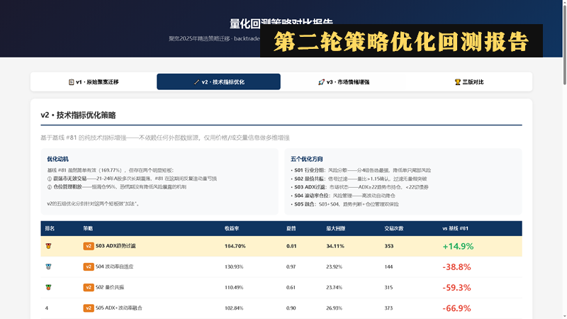
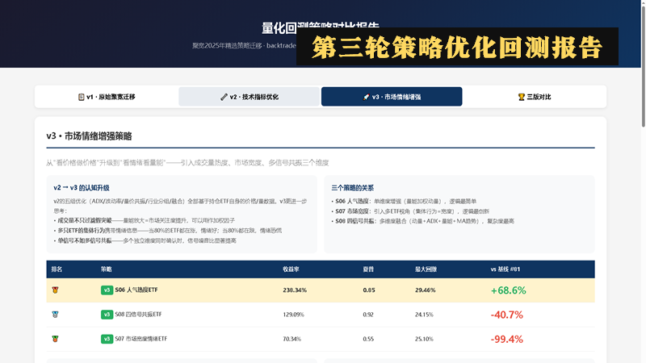
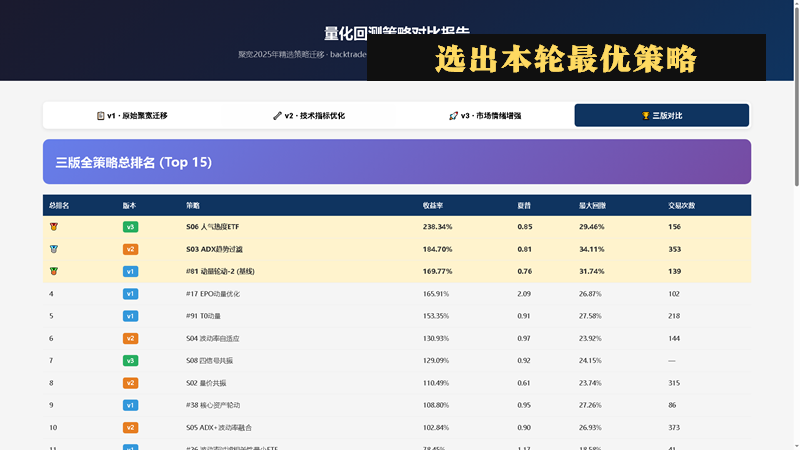

上一篇《我终于用龙虾优化了量化策略》发出来之后，有60多位读者加我，然后我拉了一个AI量化群，不得不说，真的是大家要多交流多沟通，资源一交换就有了，点子一交流就多了。
我以前找量化策略，都是随机打开Google开始搜索，或者是在知乎上看到某个有意思的量化帖子，收藏一下，仅此而已。也是托新拉群的福，有群友分享了聚宽上优秀量化策略的百度网盘合集，然后我才发现，聚宽是个被我一直忽略的宝藏网站，而且补足了我的AI财富办公室的主要拼图。
现在，我已经给AI财富办公室配了一位AI CEO和六个AI员工：投顾负责策略评估，投研负责数据研究，PM负责项目管理，秘书负责写PPT和文档，Coder负责写代码修bug。 
我的任务，是作为董事长，给员工配置好各种脚手架资源，例如搜索引擎、行情数据、最新资讯、聚宽自动化回测、backtrader、新闻、python环境等等；然后主要负责吸收信息和决策。
在我的AI工作室里面，只需要告诉CEO"今天干什么"，它自己去拆解任务、分派工作、汇总结果。我主要是负责监管几个AI干活，然后继续搭建自己的脚手架。

比如我可以一边盯着回测和优化进度，一边尝试用Claude Code操作我的微信，最好搭建好我的个人知识库，然后读者来问我的时候，我的AI可以基于我的知识和思路，先回复一些基础问题吧。
一、搭一个AI财富办公室
核心思路：我的AI CEO就是我的主力开发机，是我老婆2022年送我的外星人R13（12700+32G DDR5+3070TI），其实我一直没利用好，直到我在2025年装了Ubuntu系统以后，老设备反而焕发生机了。
我现在是用主机的openclaw 作为AI CEO，通过我的AI财富办公室网页应用，通过会话和中央看板，管理了6个AI员工（docker版本openclaw），分别是投研、投顾、PM、信息核查、程序员和秘书，给每个AI员工写了不同的角色描述，迭代了好几个版本。
• AI CEO：接收我的指令，拆成子任务，分给对应员工，最后汇总成报告。它是整个办公室的调度中心。没有它，我就得自己记住每个AI在干什么、下一步做什么——这本身就是一种认知负担。
• 投顾（投资顾问）：评估策略的收益风险特征，做横向对比分析，给配置建议。它回答的问题是"这个策略适不适合真实用"。
• 投研（投资研究）：研究因子有效性、市场微观结构、事件传导逻辑。它深挖策略背后的"为什么"。
• PM（项目经理）：管理任务进度，跟踪回测状态，确保事情不被遗漏。
• 秘书：生成PPT和Word文档，把数据变成人能看的报告。
• Coder：写策略代码、迁移框架、调试bug。它是干活的主力。
• 信息核查：我的原则是，投顾和投研的结论不能打架，然后信息核查，或者叫质检负责根据可靠的真实信息，去核实投研和投顾的结论。
更好笑的是，我一个不小心，把PM和秘书的工作描述写得跟CEO一样，结果我每次下命令的时候，发现秘书和PM都在帮我催其他员工，我还以为是我的系统出了bug。
这也说明，如果要组建团队的话，最好是一个一个陆续加入，猛的进来7个员工，彼此之间职责不清的话，不管是人类团队还是AI团队，肯定会乱上一阵子的。
更崩溃的是，等我辛苦写完以后，才发现github上早就有人开源140个岗位的描述，我感觉我有一点点傻，怎么忘了伟大的开源社区什么都有呢。
估计很多人会关心，关于openclaw和claude code用哪个的问题，对我来说虽然主力是claude code，但是龙虾还是有他适合的使用场景的。
如果是创新的事情，或者我需要对某个开源项目进行个性化魔改，需要我的智力持续进行干预，那就由Claude Code来做；如果是一些每天例行的事情，那就由openclaw来完成；另外，CEO龙虾也会直接调用Claude Code完成任务，目前运转良好。
七个AI，一个我，这不就是标准的OPC（一人公司）么？各AI员工有专精领域，各司其职，AI CEO居中调度，我作为一人公司的董事长，负责寻找方向，消化信息，进行决策。
这个思路不新鲜，我觉得我的创新点在于，AI CEO作为宿主机，是可以调用Claude Code的，也就是AI CEO有了直属部队，对于不好分的活儿，CEO龙虾不用自己干，而是让Claude Code来干，一下子效率就高了。
说个好笑的事，从我组建AI团队就能看出来，为什么皇帝需要百官斗来斗去，而不是唯一个宰相马首是瞻；为什么在有了文武百官以后，还总是需要东厂、西厂和御马监这种指哪儿打哪儿的直属部队。
因为，如果AI投研给了我错误结论，我的损失只能自己承担，所以AI投研给我的结论我不相信，我需要AI投顾也给我一个研究，然后信息核查这种AI质控也要给我一个反馈，多方信息才能说服我。
但是我不想做得像AI Hedge那样，一群AI吵来吵去，最后还是浪费我的决策力，所以我需要给AI CEO配置上Deepseek V4 pro，用来汇总和总结。
然后我为什么要让CEO龙虾调度claude code？因为龙虾基本属于那种未经准确缜密规划就开始动手的智能体；所以我不希望CEO龙虾直接动手，然后被一堆tools 污染上下文，我只需要他监工，加上分派任务，然后总结向我汇报。而且总结也是秘书的活儿，所以我的秘书是GPT 5.5，目前写文章最佳。
不要让一个超级AI干所有事，而是让多个AI各干各的。一个全能AI确实什么都能做，但它会丢上下文。万一回测代码写到一半，让它去分析策略逻辑，再切回来代码内容已经被刷新了一半。专职工人各干一摊，切换成本归零。
最核心的，人应该是决策者，不是操作员。 以前多次尝试搞量化未果，因为是AI在网页里面告诉我每步怎么做，"打开这个文件""改这个参数""跑这个回测""你可能是哪里哪里错了"，我是操作者，苦不堪言啊。
现在是我作为董事长，告诉CEO"把聚宽的100个策略改写和迁移，然后用本地环境和行情回测"，剩下的拆解、分派、跟踪、汇总，全部自动。人的角色从操作者变成了决策者，所以我能搞出来很多事情了。
二、A股全栈数据：六层够用就行
巧妇难为无米之炊。AI员工招齐了，得先解决数据问题。
我以前对量化的数据门槛有种恐惧，觉得无从下手。Wind终端一年好几万，L2逐笔行情一年也是好几万，加上服务器一上来就是一台机器顶半套首付。我一个白天上班晚上带娃的中年人，完全不想砸这个钱进去试水。
但翻完群友分享的聚宽社区资源以后，我发现一件事：日频级别的策略，根本不需要那么贵的数据，我更希望去找到一些归因分析，所以免费数据源拼一拼就够了。
感恩开源社区，我找到了一个A股数据获取的技能，他已经搭了一套A股全栈数据Skill，覆盖六层数据，全部来自免费开源数据：
数据源是可用的，全部搭完跑通，花了0元。
mootdx是免费的通达信行情接口，akshare是开源金融数据库，iwencai是问财的搜索结果爬取——这些东西单独看每一个都不算什么，但拼起来就是一个能打的A股数据栈。
真正的脏活在清洗。不同数据源的时间戳格式不一样、复权方式不一样、停牌处理不一样、code格式也不一样（六位数字、加.SH/.SZ后缀、加sh/sz前缀），这些细节单挑出来都是小问题，但伟大的开源社区，伟大的贡献者，把这些问题都解决了！
以前如果是我自己手动整这套，估计干两天就放弃了——量化的人都死在数据清洗这一步，不是死在策略上。这次是让Coder把脚本全部写好，PM把清洗任务排成定时任务，每天凌晨自动拉数据、清洗、入库，第二天早上数据已经躺在数据库里了。
我只需要定期让负责运维的子Agent生成数据质量报告，看看有没有缺失、有没有异常。这是脚手架的价值——一次性搭好，就能一直用，而且越用越好用。。
三、聚宽社区的宝藏：100个精选策略
数据齐了，下一步是策略。
策略这东西，我作为半路出家的中年人，是真的写不出来。让AI从零写吧，AI也只能写出一些"双均线金叉买入"这种教科书级的东西，没什么实战价值。
转机就是开头说的：AI量化群里的群友分享了聚宽2025年精选策略的百度网盘合集，100个策略，类型覆盖ETF轮动、小市值因子、涨停板战法、基本面价值、CTA趋势跟踪——对我这种半路出家的人来说，这就是一座现成矿山。
我把100个策略全部下载到本地，让AI按类型分目录，然后做了一件以前我自己根本没耐心做的事——代码依赖分析：
• 89个策略依赖聚宽专有API。比如get_fundamentals()查估值财务、jqfactor.get_factor_values()查因子数据、finance.run_query()查分红数据库——这些是聚宽花钱买回来又封装好的接口，本地没对应数据源，搬不过来。
• 12个策略只依赖日线OHLCV（开高低收成交量）数据。这些全是ETF动量/轮动类，逻辑简单，但恰好也是聚宽社区里最成熟的一类。
12%的迁移率不算高。但反过来想：AI自动读完101份代码、识别所有API依赖、标记可迁移性——这件事如果让我自己干，光读代码就得花掉一个周末，中间还容易漏。
能迁移的12个策略，逻辑都不复杂：算过去一段时间哪些ETF涨得最好，满仓持有最强的那一两个，下个月再换。 简单，但聚宽社区跑过的数据告诉我，这种东西在过去5年的A股是有效的。
四、本地回测：backtrader搭台
聚宽在线回测虽然好用，但有两个硬伤。
第一个是积分按次消耗。免费账户每天100积分，跑一个策略消耗2-4积分。101个策略跑完，光积分就不够。
第二个更要命，聚宽是个黑盒。回测引擎内部怎么算的，我看不到；想改一行代码看看结果变化，必须重新走一遍上线编译，等几分钟。在这种节奏下迭代策略，三天才能走完五轮——根本没法持续优化。

所以我选了backtrader，Python开源回测框架，文档齐全，社区活跃。CEO龙虾指挥太监CC们花了一小时做框架适配：
• 聚宽 get_price() → akshare数据加载
• 聚宽 order_target_percent() → backtrader的 order_target_percent
• 聚宽 run_daily() → backtrader timer
适配完成后，部署到一台Linux服务器上（RTX 5090，回测不吃GPU，吃CPU单核性能，所以服务器其实是为以后训练因子模型准备的）。创建conda环境，装依赖，批量跑通12个策略。

回测期间：2021-01-01 至 2025-12-31，初始资金10万元。结果如下：
完整12个策略的表，我让秘书放到了HTML报告里，这里只列了首尾几个。我自己看完这张表，有几个挺意外的发现：
动量轮动是性价比之王。 前四名清一色都是动量轮动策略——不择时、不选股、不用L2，就能年化30%+。当然，这是过去5年A股ETF品种大扩容的时代红利——可选品种多了，轮动空间才大。这玩意儿能不能持续，我没把握。
低回撤的价值被低估了。 #90固收+只跑出42.16%总收益，年化大概7.3%。乍一看不性感，但是夏普1.90、最大回撤2.57%——五年只交易了4次，几乎是躺着赚的。#32 EPO低相关的回撤只有1.58%。在真实投资里，低回撤的意义是让你睡得着觉，不会在市场暴跌时恐慌割肉。这个心理价值，光看收益率数字看不出来。
交易次数不是越多越好。 #91 ETF-T0动量交易了218次，收益率反而不如交易102次的#17 EPO优化。频繁换仓的摩擦成本会吃掉很多收益——印花税、佣金、滑点，每一项单独看不算什么，但叠在一起就是真金白银。

五、三轮迭代优化
基线跑完只是起点。本地回测最大的优势这时候才开始显现——改一行代码，30秒出结果。和聚宽上等几分钟一次的体验完全不在一个量级，迭代速度提升了至少10倍。
CEO让投研盯着收益曲线，让投顾盯着风险特征，让Coder在#81（基线最强动量轮动）上加各种技术指标做对比实验。
v2 技术指标增强：
• S03 ADX趋势过滤：收益率从169.77%提升到184.70%。逻辑是ADX低于22时自动切换到债券ETF避险——不是选得更好，而是知道什么时候不选。5年做了353次交易，远多于基线的139次，但大部分增量是在债股之间切换，没有增加方向性风险。
• S04 波动率自适应：收益率130.93%，不如基线，但夏普从0.76提升到0.97，最大回撤从31.74%降到23.92%。逻辑很简单：波动率高时降仓位，波动率低时加仓位。让仓位跟着风险走。
• S05 ADX+波动率融合：收益率102.84%，反而不如单用。两个好指标叠在一起反而变差——波动率在趋势市也减仓，ADX又在弱势不持仓，双保险导致反应过慢错过反弹。两个有效的风控逻辑叠在一起，本身就是一种新的过拟合。

v3 市场情绪增强：
v2加的都是"内向型"指标——只看持仓ETF自身的价量。v3换思路，加"外向型"指标——看看整个市场在干什么。
• S06 人气热度：收益率238.34%，全系列最高。把动量分和成交量热度分相乘，选择"既有趋势又有放量"的ETF。这里有个关键设计：用乘法而非加法组合两个因子——加法会稀释信号，乘法要求两个维度必须同时成立才给高分。比开关型的"量比达标才入选"更精细。
• S08 四信号共振：收益率129.09%，夏普0.92。四个信号（动量>0、ADX≥22、量比>1、价格>MA20）独立判断，满足3个满仓、2个70%、1个40%、0个空仓。信号越强仓位越重——同一笔交易里不确定性不一样，要区别对待。

三轮跑完，整体趋势是明确的：每一轮都在提升风险调整后收益，但幅度在递减。纯动量这条赛道的信息差不多被榨干了，继续在这个方向上调整，上升空间有限。下一步要换赛道——加情绪因子、加资金流因子、加事件因子。
但更重要的是：这三轮优化，我自己完全只动嘴，没写一行代码。我只是在CEO龙虾反馈"加完ADX以后涨了15%"的时候，说一句"那再试试考虑舆情和情绪呢"，剩下的反正全是AI干的，我主要是盯着，一边练练腕力。
六、HTML报告：让数据自己说话
跑完一堆回测，一堆数字摆在终端里。看着累、转发不方便、过两周自己都忘了哪个是哪个。
我让秘书出场，丢了一句话："把所有回测和优化结果生成一个HTML，发出去能让朋友一眼看懂。"

它做了我没让它做的事：
• 自动选Chart.js画收益率曲线对比图
• 加了策略排名表、最大回撤区间标注
• 配色用了深蓝+橙色——专业且醒目
• 每张图下面附了AI投顾写的关键决策说明：为什么选ADX而不是RSI、为什么用乘法组合而不是加法
我连HTML做成什么样都没想好，就拿到了成品。打开浏览器一看，比我自己想像的还好一点，而且数据分析很清晰，加上数据就在本地，有问题AI会给我耐心解答的。
最让我有感触的是那些"为什么"——不是代码本身，是判断过程。聚宽社区里很多策略只贴回测曲线，不说背后逻辑，但是我的AI财富办公室，至少把我看不懂这个问题都解决了，让我能基于经验提出一些修改建议，而且我还不用露怯。
AI投顾这种主动把"为什么这么做"写进报告的习惯，反而让一份回测报告变成了一份能教人的材料。
这才是"AI财富办公室"的正确打开方式：CEO接到任务，安排Claude Code完成基本的数据和代码准备工作，然后CEO再正式开工，让Coder从代码角度给意见，让投顾、投研从投资分析角度给意见，让秘书做排版和发布——各干各的，最后汇总。我只动了十几句嘴。
但是我觉得openclaw有很大bug，我跟他发消息说停止、发/abort 让他停止，按ctrl+C让他停止，还有发/stop让他停止，CEO龙虾都不搭理我，这点比claude code差远了。
七、效率账，以及局限
简单算一下账。
如果手动完成这一切：策略筛选与代码分析至少1天，backtrader迁移与部署1天，批量回测加三轮优化2-3天——对于熟手估计4-5天，对于新人估计2-3年。AI财富办公室实际跑了约两个半天，其中我深度参与的时间不到4小时。
但人不是没事干，我做的事是：
1. 架构设计——搭什么AI团队、配什么数据Skill、选什么回测框架
2. 关键判断——优化先做情绪还是先做趋势
3. 质量审查——AI偶尔会数错编号、写串数据、把不同策略的回测结果搞混，每跑完一批扫一眼，有时候还会卡进死循环里，需要我及时叫停
4. 设定边界——告诉AI哪些能做、哪些别碰、优先级怎么排
人从操作者变成架构师，效率提升的真正来源是：人不再花时间在CTRL+C和CTRL+V上，只花在判断上。
但局限当然有，只是说对于还处于小白阶段的我来说可以接受。
第一，免费数据的精度有差距。akshare和聚宽的数据不完全一致，同一个策略在两个平台上的收益率会偏离几个百分点。实盘之前数据必须升级。
第二，过拟合的陷阱一直都在。v1→v2→v3每轮都在提高收益率，但有可能只是越来越贴合2021-2025这段历史。真正的考验是未来6个月——如果策略崩了，那"优化"就只是数据挖掘。
第三，12个只是开始。89个卡在聚宽专有API上的策略，如果本地有了估值、财务、因子数据，迁移率能从12%跳到60%以上。这是A股数据Skill下一步要扩展的方向。
这是上篇，主线是怎么用零成本搭出一套可持续运转的AI财富办公室。
下篇要写另一半工作：把这些策略推回聚宽自动回测、让投研投顾Coder三个AI从不同视角评审策略、最后让秘书利用PPT-Master出一份PPT。
对我来说，AI不再是工具，而是帮我干脏活累活，24小时在线，懂得还比我多，而且听我指挥的同事，真的太香了。
想进一步交流的朋友，可以看看这篇文章的文末信息
声明
本文基于个人实践，不构成任何投资建议。
回测数据仅代表历史表现，不代表未来收益。量化策略的实盘表现可能因市场环境、交易成本、滑点等因素与回测结果存在显著差异。
文中策略编号和收益率均为实验数据，请勿据此进行实际交易。